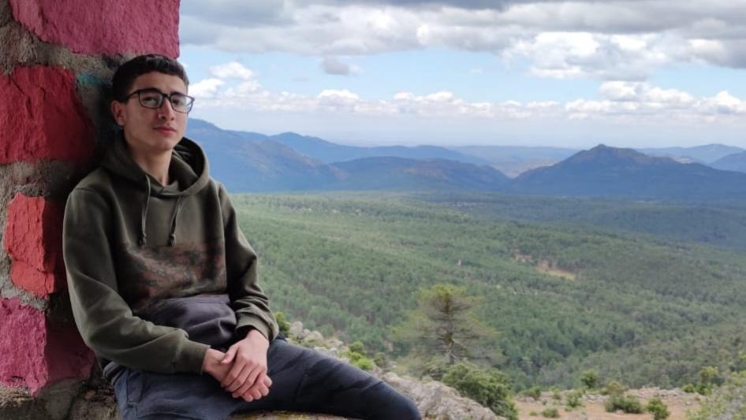
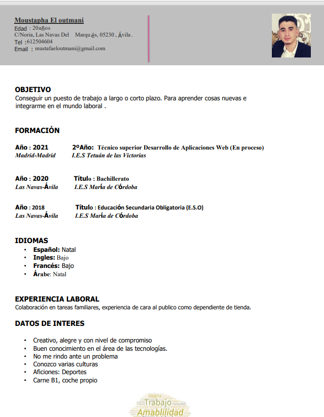

Bienvenido a mi sitio web
Un poco de mi
Actualmente me encuentro estudiando un ciclo de grado superior, para ser técnico en desarrollo de aplicaciones web. Estoy en el segundo año y con ganas de empezar en el mundo laboral del desarrollo.
A lo largo de estos dos años he aprendido diversos lenguajes como java, php, javascript, html, css, XML y SQL.

Mis intereses
Me gustan las dos partes tanto bakend como frontend, yo creo que es necesario saber de las dos partes para poder tener un buen conocimiento a la hora de programar o de diseñar. Me gustría ser Full stack y así poder deicarme a las dos partes.
A mi me gustáría estar en una empresa en la que pueda aprender y participar en grandes proyectos, que tengan un buen plan de formación y que se pueda escalar dentro de la empresa.


Mi CV
En mi curículum se encuentra información de mis estudios, experiencia profesional y otros datos sobre mi
En este enlace encontraras mi curículum

Acerca de
En este trabajo he utilizado cosas que hemos visto en clase y alguna que he investigado por mi cuenta:
- Menú fijo: aparece durante toda la página
- He utilizado flex:en la cabezera y en el contenido
- Grid:en la parte del contenido las cajas grandes
- He añadido una animación en la cabezera
- La páguina es responsive, con varios puntos de ruptura
Este es mi enlace a mi prototipo